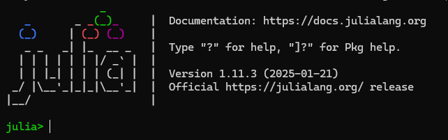

Installation guide
To actively participate in the workshop and use the notebooks we provided, you will need to install both Julia and Pluto.jl on your system. The following is a minimal guide on how to do this. You can find more extensive information in the Pluto.jl documentation (which this guide is based on) and also watch their instruction video.
Please note that we will not be able to help with installing Julia and/or Pluto during the workshop. If you experience problems please contact us before the day of the workshop. Best case you explain your issue in our GitHub discussion, here you can also see problems others had (you will need a GitHub account to make contributions).
In this video, Romy and Ruman show how to install everything using the steps below.
Installation
Step 1: Installing Julia
In most cases, we recommend installing Julia through the julia-version manager juliaup. This will allow you in the future to easily update and switch between different Julia versions.
Windows: Windows app store or run winget install --name Julia --id 9NJNWW8PVKMN -e -s msstore in a cmd.exe
MacOS/Linux: open a terminal and run curl -fsSL https://install.julialang.org | sh
❌ Something didn’t work? Try following the instructions here. You can also ask questions in our Unfold.jl github-discussion group
If all things fail, you can also try to go to https://julialang.org/downloads and install the latest stable release.
Step 2: Run Julia
Make sure that you can run Julia. To do this, open a terminal and type julia. You should then see the below startup message and your terminal should say “julia”.

Step 3: Install Pluto
To install Pluto type
import Pkg; Pkg.add("Pluto")into the Julia terminal (i.e. after step 2)
Step 4: Run Pluto
To run Pluto.jl, simply type the following in the Julia terminal:
import Pluto; Pluto.run()This will start up a Pluto session and automatically open your browser.
Step 5: Installing the required packages
We are providing a “package installation” notebook. This will make sure that everyone will be using the same package versions. Please run this one before any of the other notebooks.
- Copy this link to the installation notebook:
https://github.com/s-ccs/workshop_unfold_2025/blob/main/00_installation.jlPut it in the Pluto.jl box next to open a notebook.
Confirm that you want to start this notebook!
Grab a ☕ - it will take 10-15 minutes to install all packages.
And then you are all done and ready for the workshop 🎉